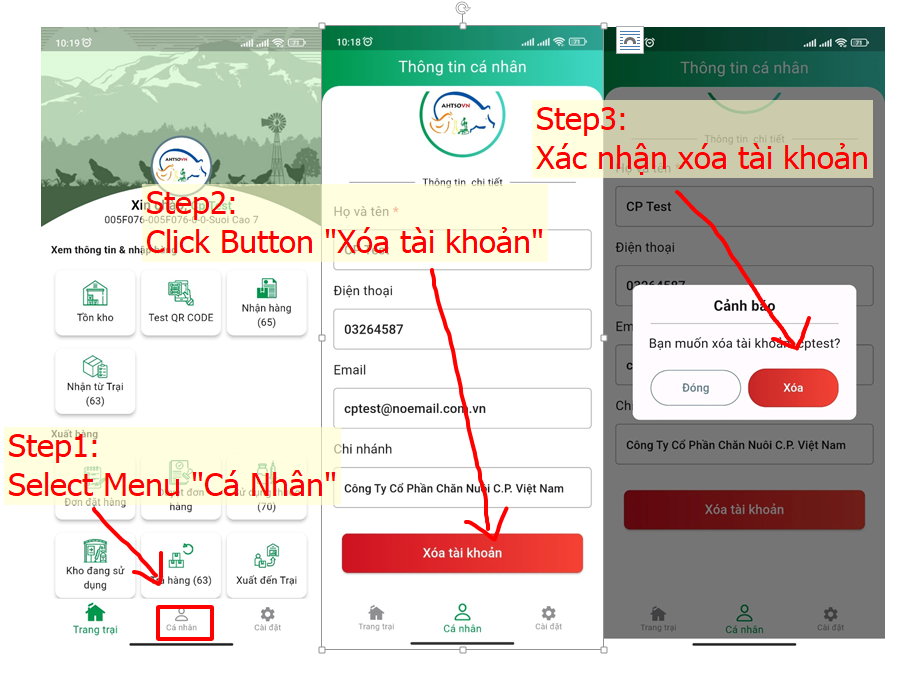

Để xóa tài khoản của bạn trên ứng dụng, làm theo các bước sau:
Lưu ý
Xóa tài khoản sẽ xóa tất cả dữ liệu và thông tin liên quan đến tài khoản của bạn.
Không thể khôi phục dữ liệu sau khi xóa tài khoản, vì vậy hãy chắc chắn trước khi thực hiện.
Nếu bạn gặp bất kỳ vấn đề nào hoặc cần trợ giúp, vui lòng liên hệ với bộ phận hỗ trợ của công ty chúng tôi: QUYETTHANG COMPANY LIMITED.
Bằng email: caitriminh@gmail.com
